Lorsque le contact est mis, certains voyants s'allument brièvement pour vérifier le fonctionnement des systèmes du véhicule. Si les systèmes contrôlés sont en ordre, les voyants correspondants s'éteignent quelques secondes après la mise du contact.
Autres informations À propos des témoins de contrôle.

Référence au manuel d'utilisation numérique :

Symbole
Signification

Signale un danger de manière autonome ou en combinaison avec un autre voyant » Mode de fonctionnement
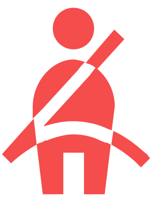
Ceinture de sécurité non bouclée à l’avant et à l’arrière » Mode de fonctionnement
Intervention du système de protection proactive des occupants » Mode de fonctionnement
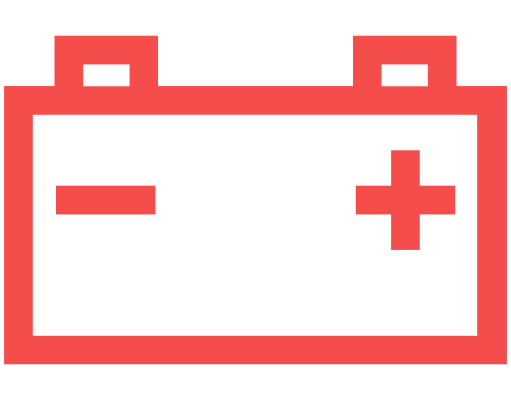
La batterie de véhicule 12 volts ne se charge pas » Dépannage

Performance insuffisante » Dépannage
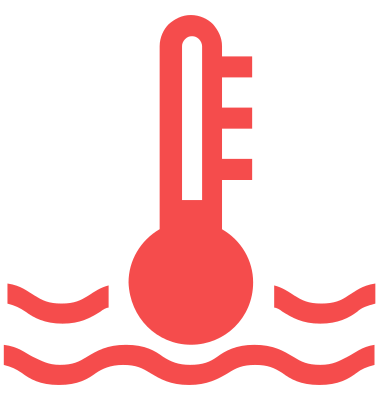
Niveau du liquide de refroidissement trop bas ou température du liquide de refroidissement trop élevée » Dépannage

Niveau de liquide de frein trop faible » Dépannage
Défaut du frein de stationnement » Dépannage
Défaut du servofrein électromécanique » Dépannage
Conjointement avec le système de freinage
 et l'ABS perturbés » Dépannage, » Dépannage
et l'ABS perturbés » Dépannage, » Dépannage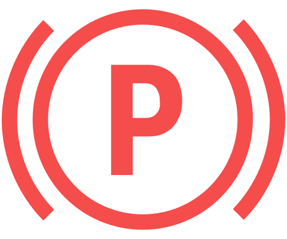
Allumé – Le témoin Frein de stationnement électronique activé » Utilisation
Clignote –Stationnement dans des pentes trop fortement inclinées » Dépannage, » Dépannage, » Dépannage

Allumé - Défaut de la direction assistée » Dépannage
Clignote – Blocage de colonne de direction défectueux (Système KESSY) » Dépannage
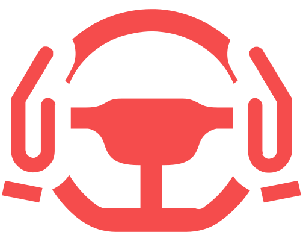
Reprendre immédiatement le contrôle de la direction » Mode de fonctionnement
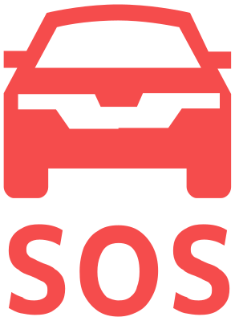
L’assistant d’urgence intervient » Mode de fonctionnement

Erreur du système de propulsion électrique » Dépannage
Batterie haute tension – Risque d’incendie » Dépannage
Avec - Surchauffe du système électrique » Dépannage
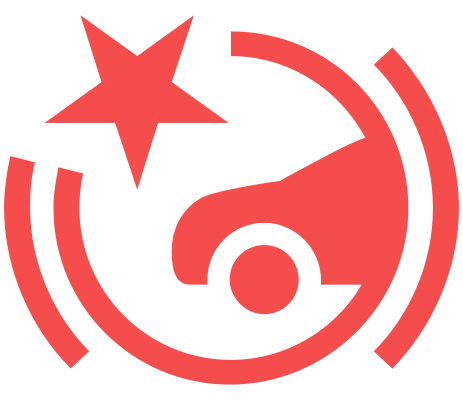
Avertissement en cas de risque de collision » Mode de fonctionnement, » Mode de fonctionnement
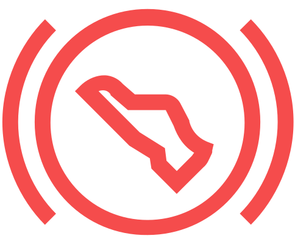
L’ACC ne décélère pas suffisamment » Mode de fonctionnement
Concentration en CO2 élevée » Dépannage

Signale un avertissement de manière autonome ou en combinaison avec un autre voyant » Mode de fonctionnement
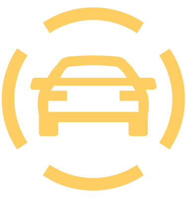
Indique, avec d’autres témoins, les restrictions des systèmes d’aide à la conduite. Suivre les instructions relatives aux témoins allumés des systèmes d’aide à la conduite. » Mode de fonctionnement
Faible état de charge de la batterie haute tension » Dépannage

Performance de conduite limitée » Dépannage
Faible état de charge de la batterie 12 volts » Dépannage
La batterie de véhicule 12 volts ne se charge pas » Dépannage
Charge défectueuse de la batterie de véhicule 12 volts » Dépannage

Niveau du liquide lave-glace trop bas » Dépannage

Capteur de lumière et capteur de pluie défectueux » Dépannage, » Dépannage

Dysfonctionnement de l'essuie-glace » Dépannage
Ampoule LED défectueuse » Dépannage

Aucun éclairage n’est allumé » Mode de fonctionnement

Feu arrière de brouillard allumé » Utilisation

Augmentation de la température des freins » Dépannage
En même temps que
 – température élevée des freins » Dépannage
– température élevée des freins » Dépannage
Avec
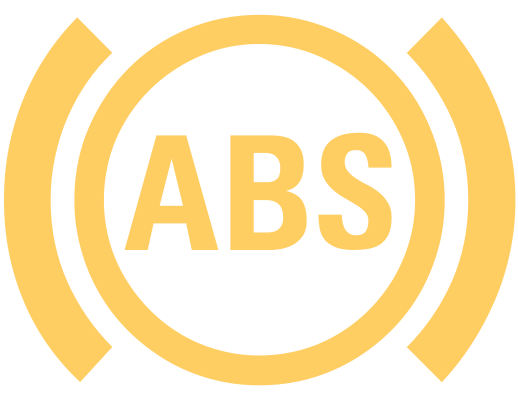
– Défaut de récupération d’énergie » DépannageErreur du système de propulsion électrique » Dépannage
Défaut du bruit de moteur électronique » Dépannage

ABS perturbé » Dépannage

Défaut du frein de stationnement » Dépannage
Défaut du servofrein électromécanique » Dépannage
Garnitures de frein usées » Dépannage

Clignote pendant environ 1 minute et reste allumé – Système de contrôle des pneus défectueux » Dépannage
Changement de la pression des pneus » Dépannage, » Mode de fonctionnement

Allumé - Défaut de la direction assistée » Dépannage
Clignote - Verrouillage de colonne de direction non déverrouillé » Dépannage
Défaut du verrouillage de la colonne de direction (Système KESSY) » Dépannage

KESSY – Aucune clé trouvée » Dépannage
KESSY – Problème lors de la mise du contact » Dépannage
Dysfonctionnement des trains roulants adaptatifs » Dépannage

Airbag du passager avant activé » Mode de fonctionnement

Airbag du passager avant désactivé » Mode de fonctionnement

Allumé avec
 – Interrupteur à clé défectueux pour la désactivation de l'airbag » Dépannage
– Interrupteur à clé défectueux pour la désactivation de l'airbag » DépannageDéfaut du système d’airbag » Dépannage
Défaut du système de protection proactive des occupants » Dépannage
S’allume pendant 4 s, puis clignote – Airbag ou rétracteur de ceinture coupé avec l’appareil de diagnostic » Utilisation
La boule d’attelage n’est pas enclenchée » Dépannage

ESC Sport est activé » Vue d'ensemble, » Réglages
ASR désactivé » Réglages

Allumé - ESC ou ASR perturbé » Dépannage
Clignote – ESC ou ASR intervient » Vue d'ensemble, » Vue d'ensemble

Front Assist désactivé » Réglages
Front Assist non disponible » Dépannage

ACC pas disponible » Dépannage
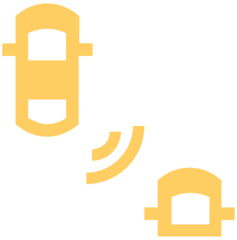
Assistant de changement de voie défectueux » Dépannage

Assistant de stationnement perturbé » Dépannage

Avertissement de sortie perturbé » Dépannage

Défaut de l’assistant pour les situations d’urgence » Dépannage
Assistant de détection de fatigue en panne » Dépannage

Park Pilot perturbé » Dépannage
Avertissement de vigilence perturbé » Dépannage

Travel Assist perturbé » Dépannage

Lane Assist intervient » Mode de fonctionnement
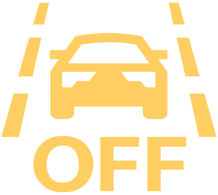
Lane Assist est désactivé » Mode de fonctionnement

Lane Assist perturbé » Dépannage
Détection de signalisation routière perturbée » Dépannage
Augmentation de la concentration en CO2 » Dépannage

Défaut du système d’appel d’urgence » Mode de fonctionnement

Clignote - Clignotant à gauche » Utilisation
Clignote plus vite – clignotant gauche en panne » Dépannage

Clignote - Clignotant à droite » Utilisation
Clignote plus vite – clignotant droit en panne » Dépannage

Clignotant remorque en panne » Dépannage
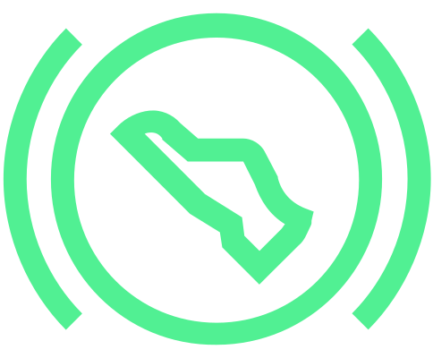
Boîte automatique déverrouillée » Modes

Le véhicule est sécurisé par Auto Hold » Mode de fonctionnement

Recharge en cours de la batterie haute tension » Utilisation, » Utilisation

Lane Assist est activé et prêt à intervenir » Mode de fonctionnement
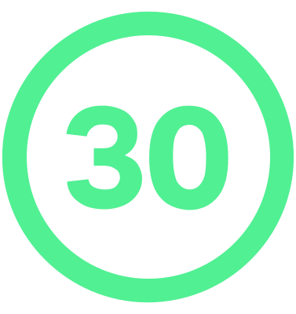
ACC règle la vitesse de conduite en fonction de la vitesse autorisée » Mode de fonctionnement

ACC règle la vitesse de conduite en fonction de la trajectoire » Mode de fonctionnement
ACC règle la vitesse de conduite en fonction d’un rond-point approchant » Mode de fonctionnement

ACC règle la vitesse de conduite en fonction d’un carrefour approchant » Mode de fonctionnement
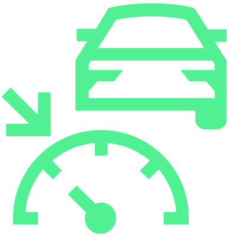
L'ACC régule la vitesse de conduite » Mode de fonctionnement

Le régulateur de vitesse régule la vitesse du véhicule » Mode de fonctionnement

Allumé - le limiteur de vitesse régule la vitesse du véhicule » Mode de fonctionnement

Travel Assist est activé » Mode de fonctionnement

Travel Assist est activé - le régulateur de vitesse est activé » Mode de fonctionnement

Travel Assist est activé - le guidage dans la voie est actifvé » Mode de fonctionnement
Défaut du capteur de CO2 pour mesurer la concentration » Dépannage

Température extérieure basse » Vue d’ensemble

Feux de route ou avertisseur optique allumés » Utilisation

Régulation des feux de route Light Assist allumé – Feux de route allumés » Utilisation
Assistant de projecteurs allumé – Feux de route allumés » Utilisation
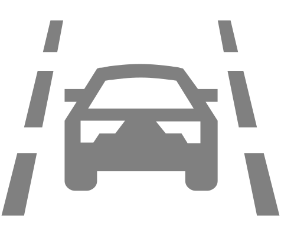
Lane Assistest activé, mais pas prêt à intervenir » Mode de fonctionnement

Auto Hold est activé » Mode de fonctionnement
Reprendre le contrôle de la direction » Mode de fonctionnement

Régulation des feux de route Light Assist allumé » Utilisation
Assistant de projecteurs » Utilisation

Entretiens » Entretiens

Défaut du limiteur de vitesse » Dépannage

Allumé - limiteur de vitesse activé » Mode de fonctionnement

ACC est activé » Mode de fonctionnement

ACC désactivé » Mode de fonctionnement
Régulateur de vitesse désactivé » Mode de fonctionnement
Limiteur de vitesse désactivé » Mode de fonctionnement

Défaut du régulateur de vitesse » Dépannage

Régulateur de vitesse activé » Mode de fonctionnement

Front Assist activé » Restriction
La distance est inférieure à la distance de sécurité » Mode de fonctionnement

Recommandation pause » Mode de fonctionnement
Alerte de distraction » Mode de fonctionnement

Mode de conduite normal » Mode Normal

Mode de conduite Eco » Mode Eco

Mode de conduite Comfort » Mode Comfort

Mode de conduite Individual » Mode Individual

Mode de conduite Sport » mode Sport

Profil de conduite Traction » mode Traction

Documents cartographiques non disponibles pour la détection de signalisation routière » Mode de fonctionnement
Paramètre d'avertissement incorrect pour la détection de signalisation routière » Mode de fonctionnement

Éclairage tous temps allumé » Utilisation